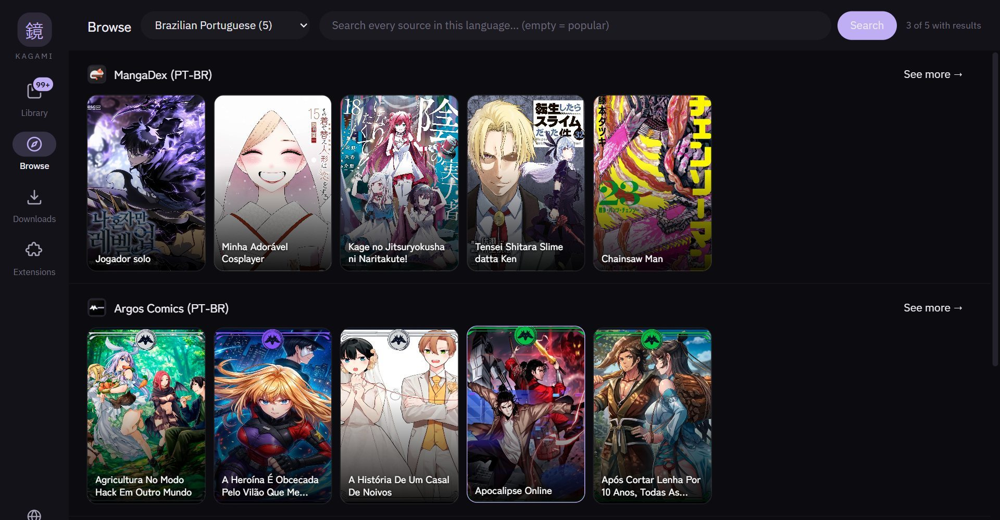
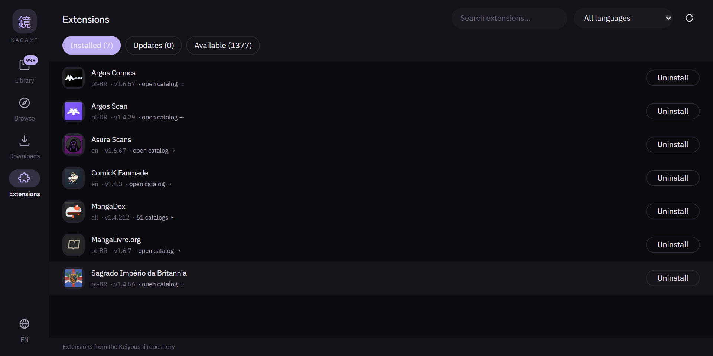
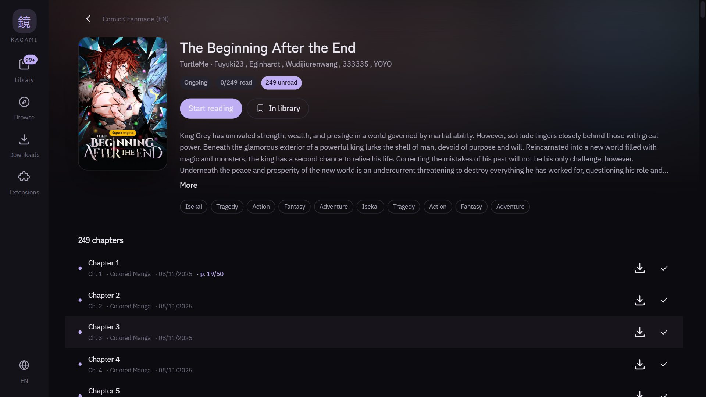
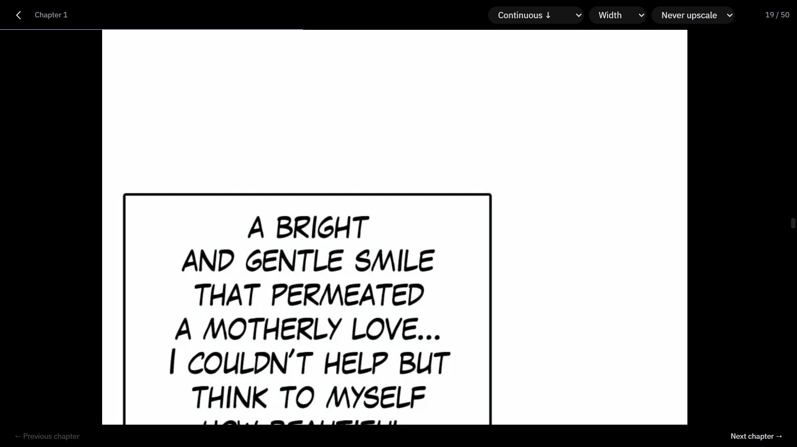

Kagami runs Mihon's extensions on your desktop. One installer — the server and its JVM are already inside.

Getting started
Mihon's sources are Android apps. Getting them to run on a desktop
normally means installing a JVM, fetching a server, and wiring the two
together. Kagami ships all of that inside a single .exe.
No Java, no server to configure, nothing to keep running in a terminal.
The extension repository is already registered — open Extensions and install what you read.
Search across sources, follow titles, download chapters for offline reading.
Before you install
The installer is not signed, so SmartScreen shows "Windows protected your PC". Click More info, then Run anyway. Code signing needs a certificate that costs a few hundred dollars a year and has no free tier, so the warning is unavoidable for any independent build.
Every release is built on GitHub's runners from the tagged commit and carries a signed statement of where it came from. You can verify the file before running it — against GitHub, rather than against a promise made here:
gh attestation verify Kagami-0.1.1-x64.exe \ --repo ItsMeYoshiro/kagami-manga-reader-desktop
The app
Screenshots from the current release.


